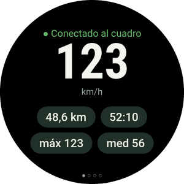
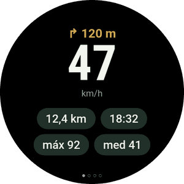
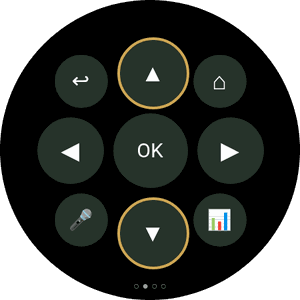
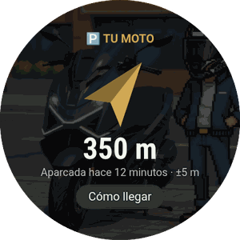
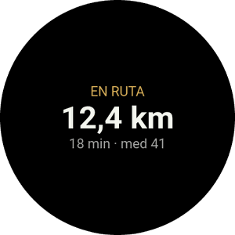
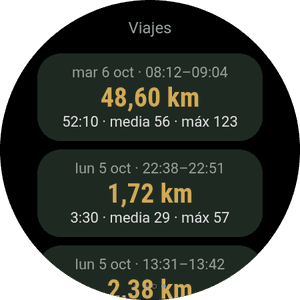
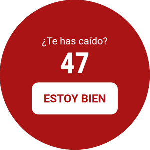
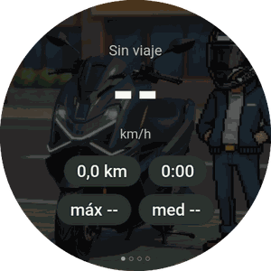
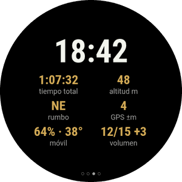

La app de Wear OS es opcional y va con la del móvil. Muestra la velocidad y la próxima maniobra, vibra antes de cada giro, te lleva hasta la moto aparcada y te deja manejar Android Auto en el cuadro sin tocar el móvil.
¿Aún no tienes la app en el móvil? Empieza por la guía del móvil.







Los relojes no abren archivos APK como el móvil, así que esta primera vez se instala con una app del móvil que habla con el reloj por Wi‑Fi (depuración inalámbrica). Suena técnico, pero son unos cuantos toques.
En la página de la última versión, en Assets, descarga el que termina en WearOS-reloj.apk. Déjalo en la carpeta Descargas.
Instala también en el móvil una de estas apps de Play Store: Wear Installer 2 o Bugjaeger.
Abrir la descargaGalaxy Watch: Ajustes → Acerca del reloj → Información de software → toca Versión de software 5 veces.
Pixel Watch y otros: Ajustes → Sistema → Información → toca Número de compilación 7 veces.
Aparece el aviso de que las opciones de desarrollador están activadas.
Ajustes → Conexiones → Wi‑Fi: ponlo en Activado (no en Automático) y conéctalo a la misma red que el móvil.
Ajustes → Opciones de desarrollador → activa Depuración ADB y Depuración inalámbrica. Entra en Depuración inalámbrica → Emparejar nuevo dispositivo.
El reloj muestra un código de 6 cifras y una dirección con puerto, por ejemplo 192.168.1.40:37115.
Abre Wear Installer 2 (o Bugjaeger), escribe la dirección y el código de emparejamiento, y después conecta con la dirección que aparece en la pantalla de Depuración inalámbrica.
Elige el archivo …-WearOS-reloj.apk de Descargas e instálalo. En un minuto aparece RideScreen AA en el reloj.
Abre RideScreen AA en el reloj y acepta la ubicación (para la brújula hacia tu moto) y las notificaciones.
Ya puedes desactivar la depuración inalámbrica y la depuración ADB: no hacen falta para usarla ni para actualizarla.

El cuadro de la Zontes no es táctil. Con el reloj manejas Android Auto como con el mando de un coche: una rueda para moverte por la pantalla y botones para elegir, volver o hablar con el Asistente.
Galaxy Watch Classic, Pixel Watch y relojes con corona que gira.
Galaxy Watch normales (4, 5, 6, 7…) y relojes de pantalla lisa.
Desliza a izquierda y derecha. Los puntos de abajo indican en qué página estás.

Con la navegación de Android Auto, el reloj vibra antes de cada maniobra: 2 toques a la izquierda, 3 a la derecha, uno largo y N cortos para la salida N de una rotonda y dos largos para un cambio de sentido.
Se activa en el móvil: ⚙️ Ajustes → Extras de ruta → Vibraciones de giro en el reloj. Es experimental.
Añade la tarjeta Viaje (desliza desde la esfera y toca +) para ver el viaje en curso o dónde aparcaste. La complicación RideScreen · km pone los km del viaje en tu esfera.
A partir de la versión 2.2, cuando salga una versión nueva: en el móvil, ❓ Ayuda → ⌚ Actualizar la app del reloj → Última versión.
El móvil descarga la app del reloj y se la envía por Bluetooth. Tarda un par de minutos: verás el progreso en el móvil y en el reloj. Al terminar, toca Instalar en el reloj.
Probablemente es el APK del móvil. En el reloj va el que termina en WearOS-reloj.apk.
El servidor de unidad principal de Android Auto está apagado en el móvil. En Android Auto: ⋮ → Iniciar servidor de unidad principal (paso 6 de la guía del móvil).
Tu reloj no permite que una app instale otra. Instala la versión nueva como la primera vez (Parte 1).
En el móvil toca ❓ Ayuda → Compartir registros y mándalo al grupo diciendo el modelo de reloj y de móvil.
RideScreen AA es gratuita y de código abierto, basada en OpenCfMoto de Alexandru (zanderp). No es una app oficial de Zontes ni de Google. Las pantallas son ilustrativas: los nombres exactos de los ajustes pueden variar según tu reloj. · Guía del móvil